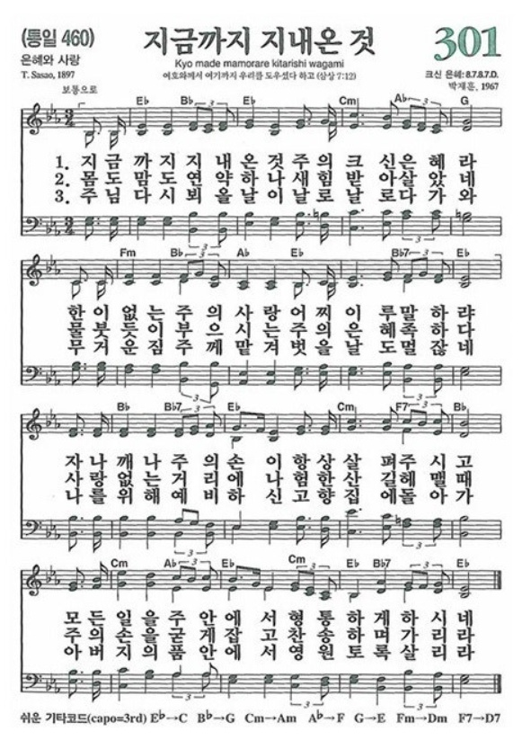
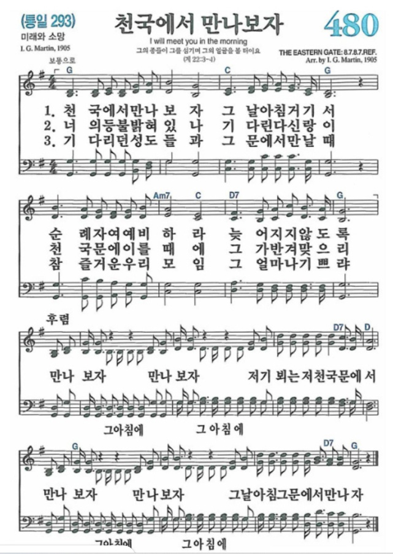

1 찬송 : 301장 (지금까지 지내온 것)

2 기도 : 최미경 사모
3 성경 : 데살로니가전서 4:15~18
15우리는 지금 주님께서 하신 말씀을 하고 있습니다. 주님께서 오시는 날, 살아 있는 자들은 주님과 함께 있게 될 것입니다. 그러나 결단코 그 날에 살아 있는 자들이 이미 죽은 자들보다 주님을 먼저 만나지는 못할 것입니다.
16그 날에 주님은 하늘로부터 내려오셔서, 천사장의 소리와 하나님의 나팔 소리가 울리는 가운데 큰 소리로 호령하실 것입니다. 그 때 그리스도를 믿다가 죽은 자들이 먼저 일어나고
17그후에 살아 있던 자들도 그들과 함께 구름 속으로 끌어올려져 하늘에서 주님을 만나게 될 것입니다.
18그러므로 여러분은 이런 말로 서로 위로하십시오.
4 설교 : 정은일 목사
5 추모 영상 및 추억 나눔
고인의 생전 모습을 회상하며 감사를 표합니다.
6 찬송 : 480장 (천국에서 만나보자)
